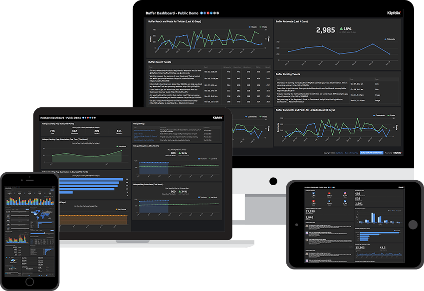
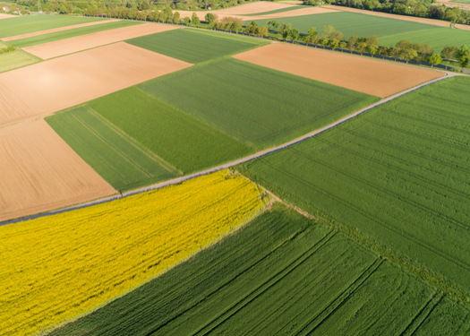
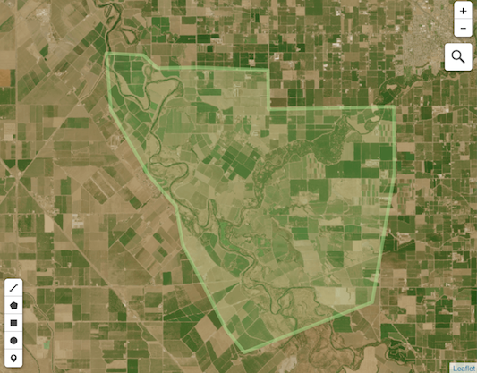

Dashboard for Agricultural Monitoring
Dashboard is a visual service where you can easy work with satellite imagery
and weather data for your cultivation.
You only have to share your location details with us
Our Dashboard will provide You :
- Pest Diseases Prediction Alert/Notification
- Daily and Weekly weather forecasts
- Current & Historical weather data
- Accumulated tempreture and precipitation
- New Satellite imagery of the area and its statistics


It is also contents lots of interesting features for farmers. With the
simple interface, they will be able to get useful agricultural data for
their fields to monitor them and analyse their state straightforwardly
without any programming. Farmers will be able to obtain important
information for their fields, which will be useful during all seasons and
phases of work with their fields.
Special parameters for agriculture:
accumulated temperature and precipitation, soil temperature and moisture
Accumulated temperature and precipitation is essential to make a right
decision depends on a threshold setting. Temperature quantity index
calculated as the sum of daily temperatures. Humidity quantity index
expressed as the sum of daily precipitation. Soil temperature and moisture
are essential indices that allow your customer to adjust irrigation work
and prevent crop roots damage.
